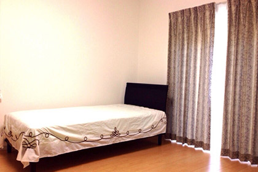

ウィークリーマンションの設備や備品
 家具や家電などがほとんどそろっていて、その日からすぐに生活できるのが魅力のウィークリーマンション。しかし、生活をするためには家具や家電以外にも、さまざまなものが必要になります。ウィークリーマンションにはどの程度の設備や備品が用意されていて、自分で用意が必要なものはあるのでしょうか。今回は、一般的なウィークリーマンションに準備されている設備や備品について紹介します。
ウィークリーマンションの設備
ウィークリーマンションは、以下のようにさまざまな設備が整えられています。
家具類
ローテーブル、食器棚、クローゼット、ベッドなど、生活に必要な全般的な家具がそろっています。広いタイプの部屋では、ソファやダイニングテーブルセットなども装備されているケースがあります。
家電類
エアコン、テレビ、冷蔵庫、電子レンジ、IHクッキングヒーター、炊飯器、電気ポット、掃除機、ドライヤーなどは、大部分のウィークリーマンションに装備されています。洗濯機は物件によって部屋に置いてある場合と、共用のコインランドリーを利用する場合があります。
契約会社によっては、コーヒーメーカー、アイロン、電気スタンド、時計（目覚まし時計）なども準備されていることも。物件によって室内の設備には差があるので、事前にどんな家電製品があるか確認しておきましょう。
ウィークリーマンションに準備されている備品
では、ウィークリーマンションに置かれている備品は、どんなものがあるのでしょうか？
キッチン用品
まな板、包丁、フライパン、鍋、フライ返し、お玉など、調理に必要な最低限のキッチン用品がそろっています。またお皿や茶碗、マグカップにスプーンといった基本的な食器も準備されています（調味料類は自分で購入する必要があります）。
生活備品
スリッパ、ティッシュ、トイレットペーパー、ゴミ箱、石けん、シャンプー、物干し竿、ハンガー、寝具（布団やシーツなど）は、多くのウィークリーマンションで装備されているので安心です。ただし、トイレットペーパーなどの消耗品については、準備されているものがなくなったら自分で買い足す必要があります。
ウィークリーマンション入居前に確認しておくべきこと
ウィークリーマンションには、たくさんの備品がそろっていますが、物件によっては生活をする上で必要な装備がないケースもあるようです。たとえば、wi-fiなどのインターネット通信が可能かどうかは、事前にしっかり確認しておいてください。
またタオル、バスタオルなどの衛生用品、洗濯や掃除に必要な洗剤類なども準備されているかどうか入居前に確認しておきましょう。これら以外にも、上記で紹介した設備や備品も置いている場合とそうでない場合があるので、どんなものが準備されているか契約時に細かく聞いておくようにしてください。
ウィークリーマンションにないもの
さまざまな設備が整うウィークリーマンションですが、以下のようなものはそろっていないので自身で用意する必要があります。
充電器類
スマートフォンや携帯電話の充電器は装備されていないので、自分の機種に合ったものを準備しましょう。室内にあるコンセントの数が少ないケースもあるので、延長コードを持って行くと便利です。
着替え類
部屋着も含めて、着替え類は自分で用意する必要があります。下着や靴下なども余裕をもってローテーションできる数を準備しておきましょう。
整髪料や化粧品類
シャンプーや石けんなどは準備されていることが多いですが、整髪料や化粧品類は置かれていないので、自分で準備するようにしてください。常備薬やサプリメントなどを服用している方も、あらかじめ用意しておきましょう。
このように、ウィークリーマンションでは多くの設備や備品が装備されていますが、契約会社や物件によってバラツキがあります。上記を参考にウィークリーマンションに入居する前に装備をチェックしておき、必要なものをそろえておきましょう。